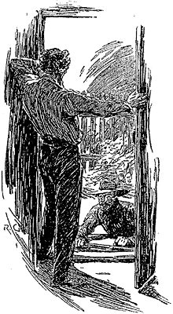

On the morning which followed his interview with the Mormon Prophet, John Ferrier went in to Salt Lake City, and having found his acquaintance, who was bound for the Nevada Mountains, he entrusted him with his message to Jefferson Hope. In it he told the young man of the imminent danger which threatened them, and how necessary it was that he should return. Having done thus he felt easier in his mind, and returned home with a lighter heart.
As he approached his farm, he was surprised to see a horse hitched to each of the posts of the gate. Still more surprised was he on entering to find two young men in possession of his sitting-room. One, with a long pale face, was leaning back in the rocking-chair, with his feet cocked up upon the stove. The other, a bull-necked youth with coarse, bloated features, was standing in front of the window with his hands in his pockets whistling a popular hymn. Both of them nodded to Ferrier as he entered, and the one in the rocking-chair commenced the conversation.
"Maybe you don't know us," he said. "This here is the son of Elder Drebber, and I'm Joseph Stangerson, who travelled with you in the desert when the Lord stretched out His hand and gathered you into the true fold."
"As He will all the nations in His own good time," said the other in a nasal voice; "He grindeth slowly but exceeding small."
John Ferrier bowed coldly. He had guessed who his vistiors were.
"We have come," continued Stangerson, "at the advice of our fathers to solicit the hand of your daughter for whichever of us may seem good to you and to her. As I have but four wives and Brother Drebber here has seven, it appears to me that my claim is the stronger one."
"Nay, nay, Brother Stangerson," cried the other; "the question is not how many wives we have, but how many we can keep. My father has now given over his mills to me, and I am the richer man."
"But my prospects are better," said the other, warmly. "When the Lord removes my father, I shall have his tanning yard and his leather factory. Then I am your elder, and am higher in the Church."
"It will be for the maiden to decide," rejoined young Drebber, smirking at his own reflection in the glass. "We will leave it all to her decision."
During this dialogue John Ferrier had stood fuming in the door-way, hardly able to keep his riding-whip from the backs of his two visitors.
"Look here," he said at last, striding up to them, "when my daughter summons you, you can come, but until then I don't want to see your faces again."
The two young Mormons stared at him in amazement. In their eyes this competition between them for the maiden's hand was the highest of honours both to her and her father.
"There are two ways out of the room," cried Ferrier; "there is the door, and there is the window. Which do you care to use?"
His brown face looked so savage and his gaunt hands so threatening, that his visitors sprang to their feet and beat a hurried retreat. The old farmer followed them to the door.
"Let me know when you have settled which it is to be," he said, sardonically.
"You shall smart for this?" Stangerson cried, white with rage.
"You have defied the Prophet and the Council of Four. You shall rue it to the end of your days."
"The hand of the Lord shall be heavy upon you," cried young Drebber; "He will arise and smite you!"
"Then I'll start the smiting," exclaimed Ferrier, furiously, and would have rushed upstairs for his gun had not Lucy seized him by the arm and restrained him. Before he could escape from her, the clatter of horses' hoofs told him that they were beyond his reach.
"The young canting rascals!" he exclaimed, wiping the perspiration from his forehead; "I would sooner see you in your grave my girl, than the wife of either of them."
"And so should I, father," she answered, with spirit; "but Jefferson will soon be here."
"Yes. It will not be long before he comes. The sooner the better, for we do not know what their next move may be."
It was, indeed, high time that some one capable of giving advice and help should come to the aid of the sturdy old farmer and his adopted daughter. In the whole history of the settlement there had never been such a case of rank disobedience to the authority of the Elders. If minor errors were punished so sternly, what would be the fate of this arch rebel. Ferrier knew that his wealth and position would be of no avail to him. Others as well known and as rich as himself had been spirited away before now, and their goods given over to the Church. He was a brave man, but he trembled at the vague, shadowy terrors which hung over him. Any known danger he could face with a firm lip, but this suspense was unnerving. He concealed his fears from his daughter, however, and affected to make light of the whole matter, though she, with the keen eye of love, saw plainly that he was ill at ease.
He expected that he would receive some message or remonstrance from Young as to his conduct, and he was not mistaken, though it came in an unlooked-for manner. Upon rising next morning he found, to his surprise, a small square of paper pinned on to the coverlet of his bed just over his chest. On it was printed, in bold, straggling letters:—
"Twenty-nine days are given you for amendment; and then——"
The dash was more fear-inspiring than any threat could have been. How this warning came into his room puzzled John Ferrier sorely, for his servants slept in an outhouse, and the doors and windows had all been secured. He crumpled the paper up and said nothing to his daughter, but the incident struck a chill into his heart. The twenty-nine days were evidently the balance of the month which Young had promised. What strength or courage could avail against an enemy armed with such mysterious powers? The hand which fastened that pin might have struck him to the heart, and he could never have known who had slain him.
Still more shaken was he next morning. They had sat down to their breakfast, when Lucy with a cry of surprise pointed upwards. In the centre of the ceiling was scrawled with a burned stick apparently, the number 28. To his daughter it was unintelligible,and he did not enlighten her. That night he sat up with his gun and kept watch and ward. He saw and he heard nothing, and yet in the morning a great 27 had been painted upon the outside of his door.
Thus day followed day; and as sure as morning came he found that his unseen enemies had kept their register, and had marked up in some conspicuous position how many days were still left to him out of the month of grace. Sometimes the fatal numbers appeared upon the walls, sometimes upon the floors, occasionally they were on small placards stuck upon the garden gate or the railings. With all his vigilance John Ferrier could not discover whence these daily warnings proceeded. A horror which was almost superstitious came upon him at the sight of them. He became haggard and restless, and his eyes had the troubled look of some hunted creature. He had but one hope in life now, and that was for the arrival of the young hunter from Nevada.
Twenty had changed to fifteen, and fifteen to ten, but there was no news of the absentee. One by one the numbers dwindled down, and still there came no sign of him. Whenever a horseman clattered down the road, or a driver shouted at his team, the old farmer hurried to the gate, thinking that help had arrived at last. At last, when he saw five give way to four and that again to three, he lost heart, and abandoned all hope of escape. Single-handed, and with his limited knowledge of the mountains which surrounded the settlement, he knew that he was powerless. The more-frequented roads were strictly watched and guarded, and none could pass along them without on order from the Council. Turn which way he would, there appeared to be no avoiding the blow which hung over him. Yet the old man never wavered in his resolution to part with life itself before he consented to what he regarded as his daughter's dishonour.
He was sitting alone one evening pondering deeply over his troubles, and searching vainly for some way out of them. That morning had shown the figure 2 upon the wall of the house, and the next day would be the last of the allotted time. What was to happen then? All manner of vague and terrible fancies filled his imagination. And his daughter—what was to become of her after he was gone? Was there no escape from the invisible network which was drawn all round them. He sank his head upon the table and sobbed at the thought of his own impotence.
What was that? In the silence he heard a gentle scratching sound—low, but very distinct in the quiet of the night. It came from the door of the house. Ferrier crept into the hall and listened intently. There was a pause for a few moments, and then the low insidious sound was repeated. Some one was evidently tapping very gently upon one of the panels of the door. Was it some midnight assassin who had come to carry out the murderous orders of the secret tribunal? Or was it some agent who was marking up that the last day of grace had arrived. John Ferrier felt that instant death would be better than the suspense which shook his nerves and chilled his heart. Springing forward, he drew the bolt and threw the door open.
Outside all was calm and quiet. The night was fine, and the stars were twinkling brightly overhead. The little front garden lay before the farmer's eyes bounded by the fence and gate, but neither there nor on the road was any human being to be seen. With a sigh of relief, Ferrier looked to right and to left, until, happening to glance straight down at his own feet, he saw to his astonishment a man lying flat upon his face upon the ground, with arms and legs all asprawl.
So unnerved was he at the sight that he leaned up against the wall with his hand to his throat to stifle his inclination to call out. His first thought was that the prostrate figure was that of some wounded or dying man, but as he watched it he saw it writhe along the ground and into the hall with the rapidity and noiselessness of a serpent. Once within the house the man sprang to his feet, closed the door, and revealed to the astonished farmer the fierce face and resolute expression of Jefferson Hope.
"Good God!" gasped John Ferrier. "How you scared me! Whatever made you come in like that?"
"Give me food," the other said, hoarsely. "I have had no time for bit or sup for eight-and-forty hours." He flung himself upon the cold meat and bread which were still lying upon the table from his host's supper, and devoured it voraciously. "Does Lucy bear up well?" he asked, when he had satisfied his hunger.
"Yes. She does not know the danger," her father answered.
"That is well. The house is watched on every side. That is why I crawled my way up to it. They may be darned sharp, but they're not quite sharp enough to catch a Washoe hunter."
John Ferrier felt a different man now that he realized that he had a devoted ally. He seized the young man's leathery hand and wrung it cordially. "You're a man to be proud of," he said. "There are not many who would come to share our danger and our troubles."
"You've hit it there, pard," the young hunter answered. "I have a respect for you, but if you were alone in this business I'd think twice before I put my head into such a hornet's nest. It's Lucy that brings me here, and before harm comes on her I guess there will be one less o' the Hope family in Utah."
"What are we to do?"
"To-morrow is your last day, and unless you act to-night you are lost. I have a mule and two horses waiting in the Eagle Ravine. How much money have you?"
"Two thousand dollars in gold, and five in notes."
"That will do. I have as much more to add to it. We must push for Carson City through the mountains. You had best wake Lucy. It is as well that the servants do not sleep in the house."
While Ferrier was absent, preparing his daughter for the approaching journey, Jefferson Hope packed all the eatables that he could find into a small parcel, and filled a stoneware jar with water, for he knew by experience that the mountain wells were few and far between. He had hardly completed his arrangements before the farmer returned with his daughter all dressed and ready for a start. The greeting between the lovers was warm, but brief, for minutes were precious, and there was much to be done.
"We must make our start at once," said Jefferson Hope, speaking in a low but resolute voice, like one who realizes the greatness of the peril, but has steeled his heart to meet it. "The front and back entrances are watched, but with caution we may get away through the side window and across the fields. Once on the road we are only two miles from the Ravine where the horses are waiting. By daybreak we should be halfway through the mountains."
"What if we are stopped?" asked Ferrier.
Hope slapped the revolver butt which protruded from the front of his tunic. "If they are too many for us, we shall take two or three of them with us," he said with a sinister smile.
The lights inside the house had all been extinguished, and from the darkened window Ferrier peered over the fields which had been his own, and which he was now about to abandon for ever. He had long nerved himself to the sacrifice, however, and the thought of the honour and happiness of his daughter outweighed any regret at his ruined fortunes. All looked so peaceful and happy, the rustling trees and the broad silent stretch of grainland, that it was difficult to realize that the spirit of murder lurked through it all. Yet the white face and set expression of the young hunter showed that in his approach to the house he had seen enough to satisfy him upon that head.
Ferrier carried the bag of gold and notes, Jefferson Hope had the scanty provisions and water, while Lucy had a small bundle containing a few of her more valued possessions. Opening the window very slowly and carefully, they waited until a dark cloud had somewhat obscured the night, and then one by one passed through into the little garden. With bated breath and crouching figures they stumbled across it, and gained the shelter of the hedge, which they skirted until they came to the gap which opened into the cornfield. They had just reached this point when the young man seized his two companions and dragged them down into the shadow, where they lay silent and trembling.
It was as well that his prairie training had given Jefferson Hope the ears of a lynx. He and his friends had hardly crouched down before the melancholy hooting of a mountain owl was heard within a few yards of them, which was immediately answered by another hoot at a small distance. At the same moment a vague, shadowy figure emerged from the gap for which they had been making, and uttered the plaintive signal cry again, on which a second man appeared out of the obscurity.
"To-morrow at midnight," said the first, who appeared to be in authority. "When the Whip-poor-Will calls three times."
"It is well," returned the other. "Shall I tell Brother Drebber?"
"Pass it on to him, and from him to the others. Nine to seven!"
"Seven to five!" repeated the other; and the two figures flitted away in different directions. Their concluding words had evidently been some form of sign and countersign. The instant that their footsteps had died away in the distance, Jefferson Hope sprang to his feet, and helping his companions through the gap, led the way across the fields at the top of his speed, supporting and half-carrying the girl when her strength appeared to fail her.
"Hurry on! hurry on!" he gasped from time to time. "We are through the line of sentinels. Everything depends on speed. Hurry on!"
Once on the high road, they made rapid progress. Only once did they meet any one, and then they managed to slip into a field, and so avoid recognition. Before reaching the town the hunter branched away into a rugged and narrow footpath which led to the mountains. Two dark, jagged peaks loomed above them through the darkness, and the defile which led between them was the Eagle Cañon in which the horses were awaiting them. With unerring instinct Jefferson Hope picked his way among the great boulders and along the bed of a dried-up watercourse, until he came to the retired corner screened with rocks, where the faithful animals had been picketed. The girl was placed upon the mule, and old Ferrier upon one of the horses, with his money-bag, while Jefferson Hope led the other along the precipitous and dangerous path.
It was a bewildering route for any one who was not accustomed to face Nature in her wildest moods. On the one side a great crag towered up a thousand feet or more, black, stern, and menacing, with long basaltic columns upon his rugged surface like the ribs of some petrified monster. On the other hand a wild chaos of boulders and débris made all advance impossible. Between the two ran the irregular track, so narrow in places that they had to travel in Indian file, and so rough that only practised riders could have traversed it at all. Yet, in spite of all dangers and difficulties, the hearts of the fugitives were light within them, for every step increased the distance between them and the terrible despotism from which they were flying.
They soon had a proof, however, that they were still within the jurisdiction of the Saints. They had reached the very wildest and most desolate portion of the pass when the girl gave a startled cry, and pointed upwards. On a rock which overlooked the track, showing out dark and plain against the sky, there stood a solitary sentinel. He saw them as soon as they perceived him, and his military challenge of "Who goes there?" rang through the silent ravine.
"Travellers for Nevada," said Jefferson Hope, with his hand upon the rifle which hung by his saddle.
They could see the lonely watcher fingering his gun, and peering down at them as if dissatisfied at their reply.
"By whose permission?" he asked.
"The Holy Four," answered Ferrier. His Mormon experiences had taught him that that was the highest authority to which he could refer.
"Nine to seven," cried the sentinel.
"Seven to five," returned Jefferson Hope promptly, remembering the countersign which he had heard in the garden.
"Pass, and the Lord go with you," said the voice from above. Beyond his post the path broadened out and the horses were able to break into a trot. Looking back, they could see the solitary watcher leaning upon his gun, and knew that they had passed the outlying post of the chosen people, and that freedom lay before them.